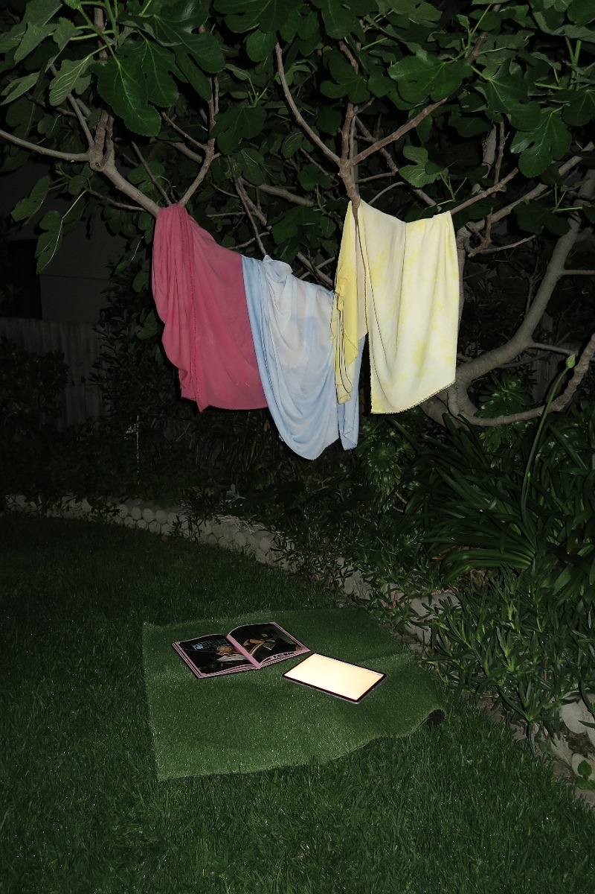
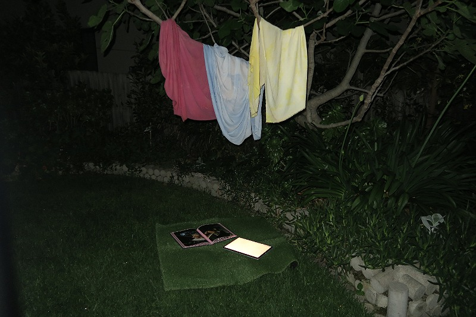

I went to Bunnings (for the second time during this project omg) and bought a tile of fake grass to use as both the cover on my book print, and a piece of flooring to hopefully more clearly tie my fabric to my book. I went out and found a bunch of branches to place against the walls and hang the fabric on, and a foamy pad to go under the turf to make it more squishy and comfortable to sit on. I practiced the set up for my installation in my garden before the exhibition, and just hung the fabric in a tree. As the digital portion of my project has morphed into being this website itself, I have also included my laptop as another element.


